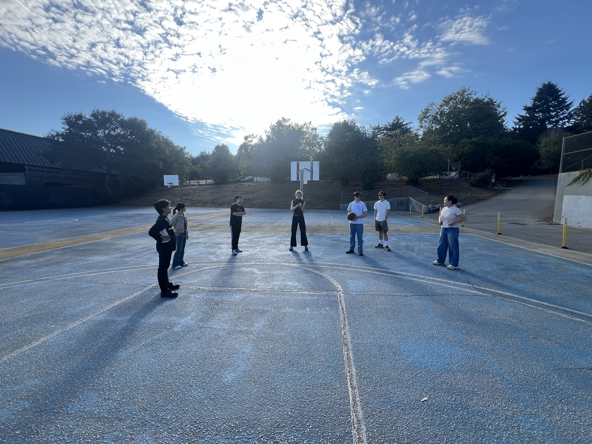
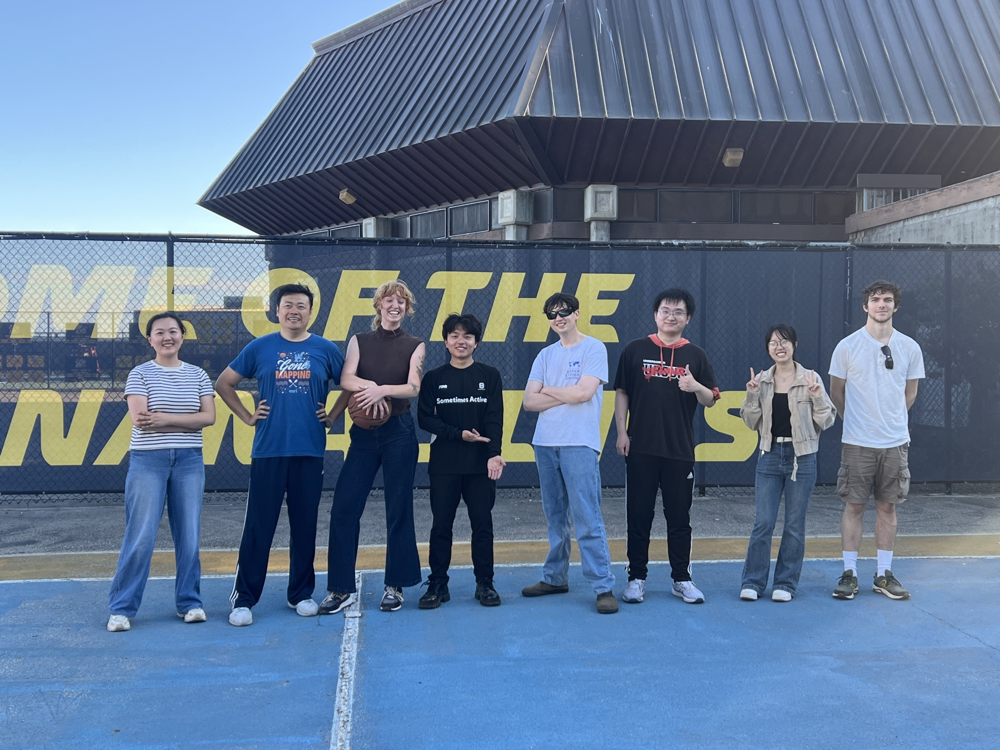
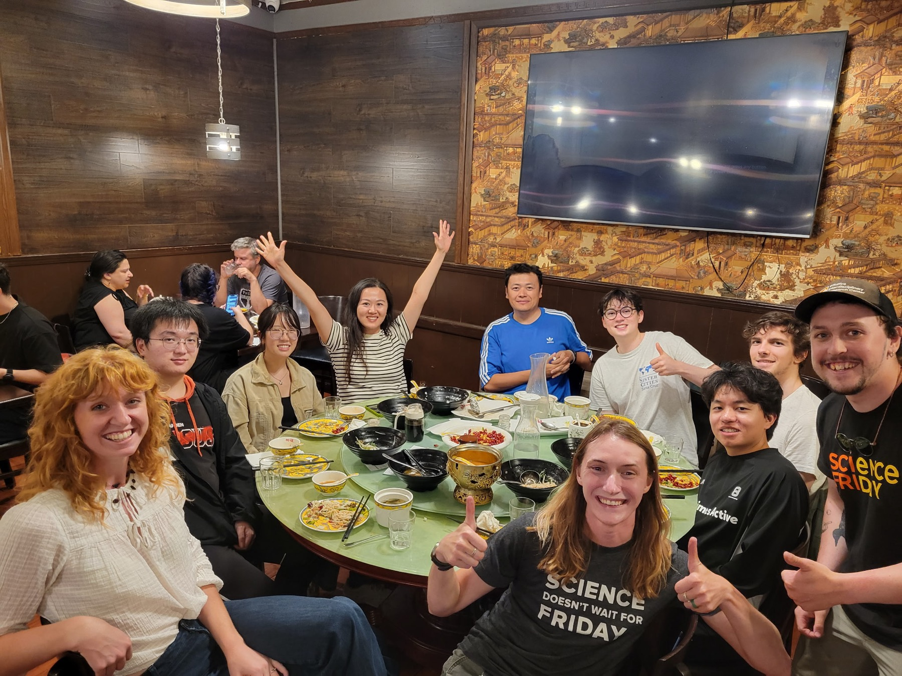

GeoFly Lab kicks off the academic year with basketball and drone flights
1 minute read
To mark the start of the new academic year, GeoFly Lab gathered for an informal activity session that combined two priorities of our lab culture: team building and hands-on field practice.
We began with a friendly basketball game—a simple way to reconnect after the summer and welcome new members. Beyond the fun, it reinforced that strong research groups are built not only through projects, but also through shared time, trust, and collaboration.

After the game, we moved outdoors for a short drone flight session. These hands-on activities help students build confidence in safe operations, mission planning, and data collection workflows—skills that directly support our research and education initiatives in GIS, remote sensing, and UAV-based mapping.

We used the time to review pre-flight checklists, discuss flight safety and situational awareness, and connect field protocols to downstream processing and reproducible analysis.

As the quarter begins, we are excited to continue building an inclusive and supportive lab environment—one that values rigorous methods, open learning, and practical experience.
